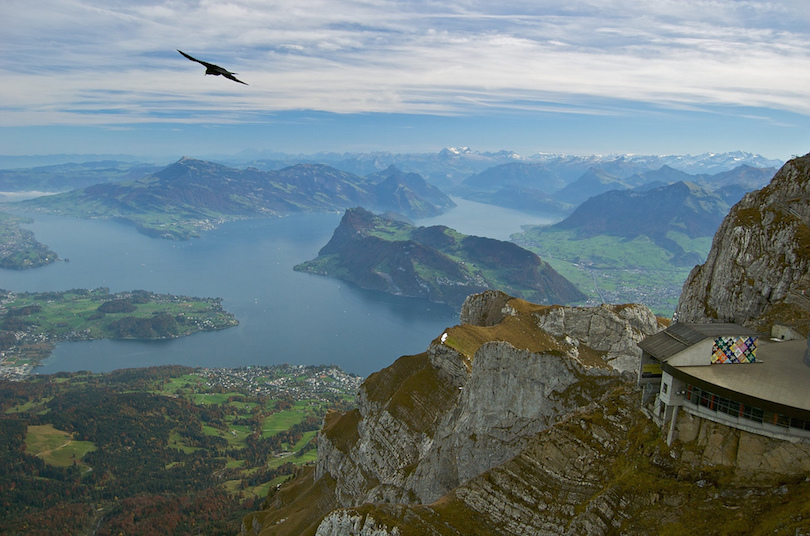
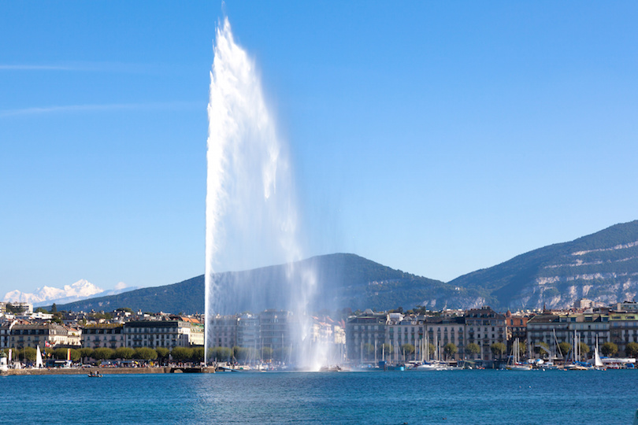
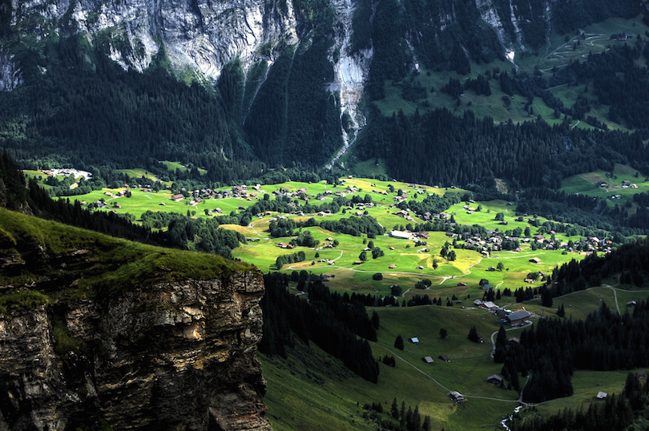
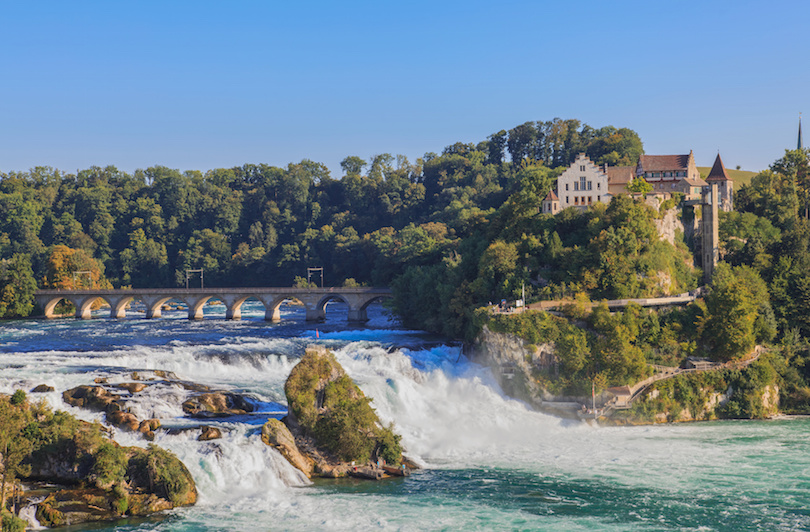
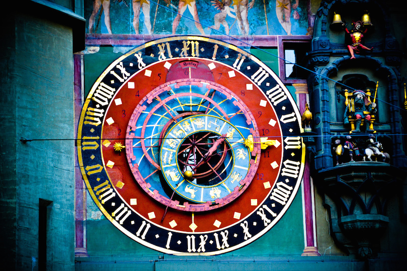
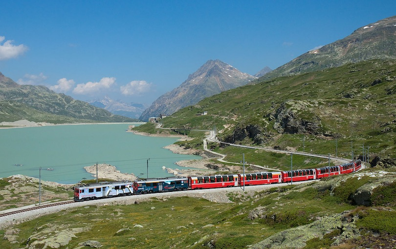
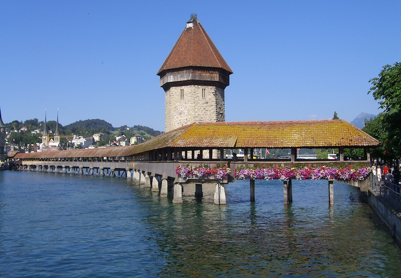
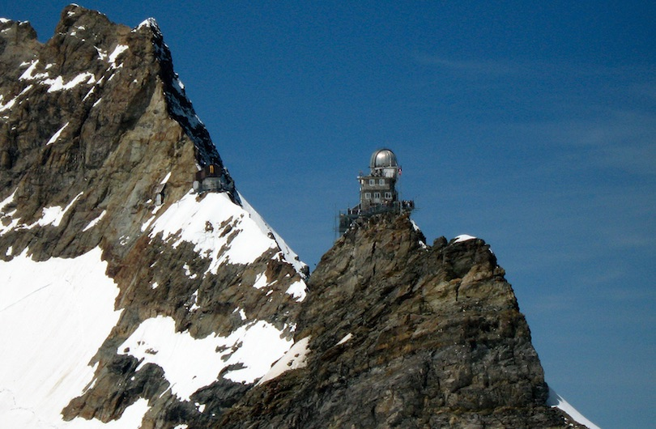
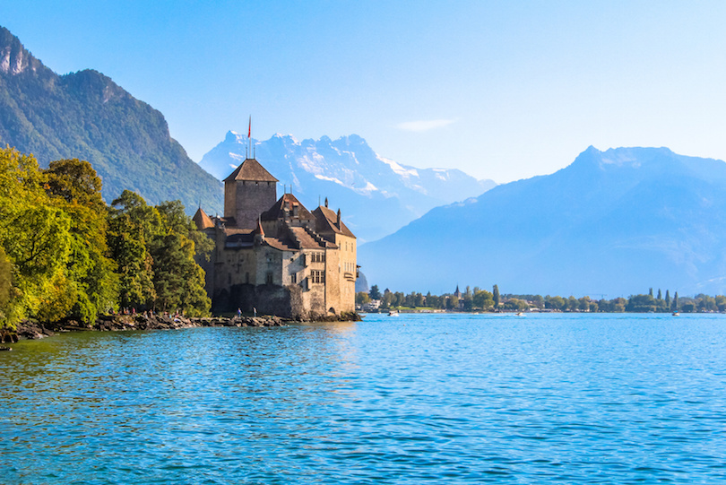
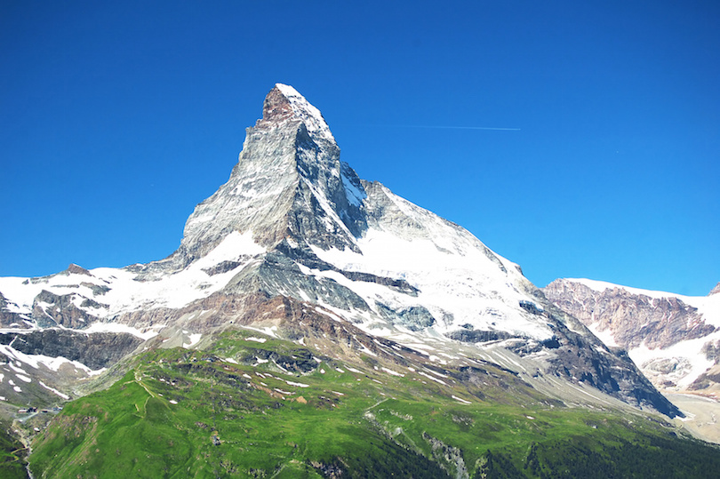

Mount Pilatus in the Lake Lucerne region is full of legends. The name of the mountain comes from a rumor that the famous biblical Roman governor Pontius Pilate may have been buried there. Medieval Europeans believed that the mountain formed as a dragon rock falling from the sky. The 2,100 meter (7000 foot) peak offers views of the Swiss and French Alps, as well as Lake Lucerne below. The winter boasts a high-altitude Christmas market, and the summer offers hiking opportunities galore. This region can be reached with the steepest railway in the world, boasting grades over 48%.
2. Jet d'Eau

This giant water fountain is one of Geneva’s most famous landmarks. Shooting 140 meters (460 feet) into the air, the Jet d’Eau sits where Lake Geneva empties into the Rhone river, and is so large that it can be seen from miles away. At any one time, 7 tons of water is in the air, much of which sprays spectators on the pier beneath. Two or three times a year it is illuminated pink, blue or another color to mark a humanitarian occasion. The local swimming area, known as the Bains de Paquis, is one of the best areas to view the fountain.
3. Grindelwald

The mountain town of Grindelwald is the largest ski resort town in the Jungfrau region. This lovely alpine town is both a summer and winter activity region. Tourists who visit in the summer can enjoy spectacular hiking trails and some of Europe’s most loved rock climbing locations. Winter tourists can ski or even try the local toboggan run. A number of locally accessible mountain peaks and passes makes this a beautiful choice for photographers and nature lovers alike. Festival lovers will love the ice sculptures at the world snow festival.
4. Rhine Falls

Rhine falls, near Schaffausen, is Europe’s largest waterfall. This amazing sight can be reached via a boat tour, which will also show visitors to Switzerland the lovely basin, riverside castles, and spectacular boulder perched in the middle of the river at the top of the falls. There are viewing platforms that reach out over the falls and allow guests to feel like they’re hovering directly above. A children’s playground, historical museum region and adventure trail make the visitor’s center a wonderful way to cap off the trip.
5. Zytglogge

The clock tower gate in Bern is the oldest city gate in town, and is a great historical site. The gate was built in the 1100s, and the clock that graces the tower is one of the most spectacular and oldest clocks that can be visited anywhere in the world. Built in 1530, this clock was the city’s master clock for centuries. The Baroque style with gold accents is a beautiful picture for both amateur and professional photographers. The tower boasts an astronomical clock, figurines, hour chimes, and two tower clocks that are all driven by a single central mechanism. This is one of the items that has secured Switzerland as one of the premiere clockmaking regions in the world.
6. Bernina Express

The Bernina Express is a brightly colored scarlet train that crosses the Alps beginning in the town of Chur and ends in Tirano, just across the border in northern Italy. Arguable the most scenic Swiss train ride, the route takes about 4hours, and goes over 196 bridges and through 55 tunnels. Views of glaciers and mountain peaks and towns, bridges spanning across 60 meter (200 foot) drops and many more breathtaking sights are speeding by outside of the train, while porters bring snacks and drinks directly to your seat. This is not a trip to miss.
7. Chapel Bridge

The Chapel Bridge is a 204 meter (670 foot) long bridge crossing the Reuss River in the city of Lucerne. It is the oldest wooden covered bridge in Europe, and one of main tourist attractions in Switzerland. The covered bridge, constructed in 1333, was designed to help protect the city of Lucerne from attacks. Inside the bridge are a series of paintings from the 17th century, depicting events from Luzerne’s history. Much of the bridge, and the majority of these paintings, were destroyed in a 1993 fire, though it was quickly rebuilt.
8. Jungfraujoch

The Jungfraujoch is a col in the Bernese Alps accessible by railway, ending at Europe’s highest mountain station. Highlights include views of spectacular mountain summits like the Eiger, Monch, and Jungfrau, and views of the large Eiger Glacier that nestles below them. The Sphinx observatory, one of the highest astronomical sighting stations in the world, is located here as well. Views are endless and pristine, though amenities are small. There is no place to stay overnight, and just a handful of restaurants. The train trip to visit for a day and the experience are, however, unforgettable.
9. Chateau de Chillon

Chillon Castle (Château de Chillon) is located on the shores of Lake Geneva. For over four centuries, the water castle was the main fortress that monitored water freight on the lake, and guarded the land route to St Bernhard Pass. The castle boasts art from the 14th century, subterranean vaults, 25 separate buildings with three courtyards, and two circular walls. Hundreds of thousands of guests each year tour the castle. For those who dream of the ultimate big fairy tale wedding, the castle can be privately rented for personal events.
10. Matterhorn

The famous Matterhorn is an iconic emblem of the Swiss Alps. The mountain derives its name from the German words Matte, meaning meadow, and Horn, which means peak. With its 4,478 meters (14,692 ft) high summit, lying on the border between Switzerland and Italy, it is one of the highest peaks in the Alps. It is also one of the deadliest peaks in the Alps. From the first time it was climbed in 1865 to 1995, 500 alpinists have died on it. The Matterhorn’s faces are steep, and only small patches of snow and ice cling to them while regular avalanches send the snow down to accumulate on the glaciers at the base of each face.